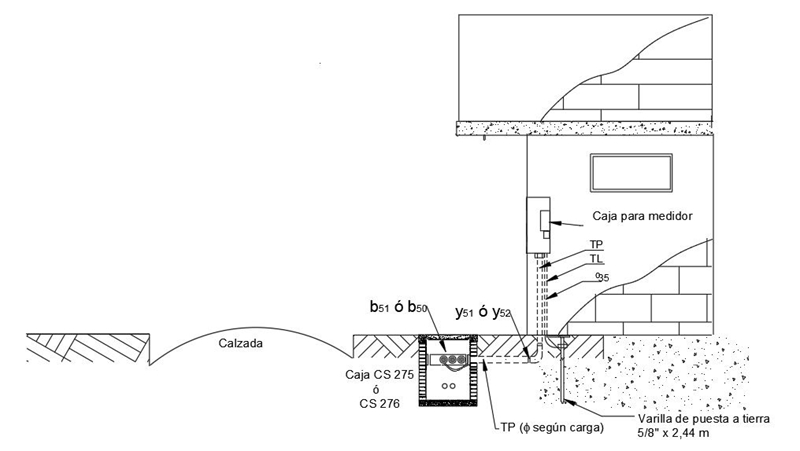

Siempre es más fácil conocer las normas ENEL-CODENSA
Rolex Rolex gold watch, compared with ordinary materials, gold watches are often expensive, but the replica rolex gold watch has the role of swiss replica watches hedging, so that it often becomes the first choice for collectors. The gold watch has value in the world, largely because the omega replica watch brand launched a commemorative limited edition watch or a replica hublot complex movement process or artistic attainments deep watches, mostly preferred gold precious metals such material. These watches tend to have a strong hedging function, therefore, Rolex Rolex gold watch reputation.

AE239-1 Acometida subterránea de B.T. con derivación desde caja de inspección frente al inmueble
Datos adicionales
Número de la norma
AE239-1
Fecha de vigencia
01/04/2022
Herramientas adicionales
- Contenido Ocultar
- ACOMETIDA SUBTERRÁNEA EN B.T. MONOFÁSICA DE 1 kW a 8 kW
- LISTA DE MATERIALES
- ACOMETIDA SUBTERRÁNEA EN BAJA TENSIÓN TRIFÁSICA DE 9 kW a 15 kW
- LISTA DE MATERIALES
- ACOMETIDA SUBTERRÁNEA EN BAJA TENSIÓN TRIFÁSICA DE 16 kW a 30 kW
- LISTA DE MATERIALES
- ACOMETIDA SUBTERRÁNEA EN BAJA TENSIÓN TRIFÁSICA DE 31 kW a 35 kW
- LISTA DE MATERIALES
- NOTAS


ACOMETIDA SUBTERRÁNEA EN B.T. MONOFÁSICA DE 1 kW a 8 kW
LISTA DE MATERIALES
| SÍMB. | CANT | CÓDIGO SAP | ESPECIFICACIÓN TÉCNICA. | DESCRIPCIÓN |
| ACOMETIDA | ||||
| CS 275 | Caja de inspección sencilla | |||
| CS 276 | Caja de inspección doble para canalización de M.T. y B.T. | |||
| b51 | ET722 | Barraje preformado de baja tensión para 6 salidas 175A-600 V | ||
| b50 | ET722 | Barraje preformado de baja tensión para 6 salidas 500 A –600V | ||
| O29 | ET116 | Metros de cable de cobre calibre 8 AWG aislado a 600 V | ||
| O28 | ET116 | Metros de cable de cobre calibre 6 AWG aislado a 600 V | ||
| O27 | ET116 | Metros de cable de cobre calibre 4 AWG aislado a 600 V | ||
| ET116 | Metros de cable de cobre calibre 10 AWG aislado a 600 V | |||
| TP11–TP12 | ET607 | Metros de ductería PVC conduit tipo pesado de ¾” ó 1” | ||
| y61 – y62 | 2 | Boquilla en PVC de ¾” ó 1” | ||
| y41 – y42 | 1 | Codo de 90° para ducto en PVC de ¾ “ ó 1” | ||
| y51 - y52 | 1 | Union para ducto de PVC de ¾” ó 1” | ||
| MEDICION | ||||
| M20 | ET921 | Medidor de energía activa, tarifa sencilla 15(60) A , 120 V | ||
| ET902 | Caja para medidor monofásico con puerta plana | |||
| ET901 | Caja para medidor monofásico con puerta extraible | |||
| ET905-1 | Caja para dos (2) medidores | |||
| ET906 | Caja para tres (3) y cuatro (4) medidores | |||
| Interruptores: | ||||
| ET502 | 1x40A | |||
| ET502 | 1x50A | |||
| ET502 | 1x60A | |||
| ET502 | 1x80A | |||
| PUESTA A TIERRA | ||||
| f3 | 1 | ET490 | Conector para varilla a tierra 5/8” | |
| TL0 | 1,5 | ET608 | Metros de tubería PVC conduit tipo liviano de ½” | |
| v22 | 1 | ET490 | Varilla de puesta a tierra 5/8" x 2,44 m | |
| y60 | 1 | Boquilla en PVC de ½” | ||
| O35 | 2 | ET121 | Metros de alambre desnudo de cobre calibre 8 AWG | |
ACOMETIDA SUBTERRÁNEA EN BAJA TENSIÓN TRIFÁSICA DE 9 kW a 15 kW
LISTA DE MATERIALES
| SÍMB. | CANT. | CÓDIGO SIE | ESPECIFICACIÓN TÉCNICA | DESCRIPCIÓN |
| ACOMETIDA | ||||
| O29 | ET116 | Metros de cable de cobre calibre 8 AWG aislado a 600 V | ||
| O28 | ET116 | Metros de cable de cobre calibre 6 AWG aislado a 600 V | ||
| ET116 | Metros de cable de cobre calibre 10 AWG aislado a 600 V | |||
| TP12 – TP13 | 2 | ET607 | Metros de ductería PVC conduit tipo pesado de 1” ó 1 ¼“ | |
| Y62 | 2 | Boquilla en PVC de 1” | ||
| Y63 | 2 | Boquilla en PVC de 1 ¼” | ||
| CS276 | Caja de inspección doble para canalización de M.T. y BT | |||
| CS275 | Caja de inspección sencilla | |||
| ET722 | Barraje preformado de BT para 6 salidas – 175 A – 600V | |||
| ET722 | Barraje preformado de BT para 6 salidas – 500 A – 600 V | |||
| Y42 | 1 | Codo 90° para ducto en PVC de 1" | ||
| Y43 | 1 | Codo 90° para ducto en PVC de 1 ¼” | ||
| MEDICIÓN | ||||
| M20 | ET921 | Medidor de energía activa, tarifa sencilla 15(60)A, 1X120 V | ||
| M21 | ET921 | Medidor energía activa, tarifa sencilla 20(80)A, 3X120/208V | ||
| CM3 | 1 | ET900 | Caja de medidor trifásico con puerta plana | |
| ET905 | Caja para dos (2) medidores | |||
| ET906 | Caja para tres(3) y cuatro (4) medidores | |||
| ET911 | Armario de medidores para seis (6) cuentas | |||
| ET911 | Armario de medidores para ocho( 8) cuentas | |||
| Interruptores: | ||||
| ET502 | 1x40 A | |||
| ET502 | 1x50 A | |||
| ET502 | 1x60 A | |||
| ET502 | 3X40 A | |||
| ET502 | 3x50 A | |||
| ET502 | 3x60 A | |||
| ET502 | 3x70 A | |||
| PUESTA A TIERRA | ||||
| F3 | 1 | ET490 | Conector para varilla a tierra 5/8” | |
| TL0 | 1,5 | ET608 | Metros de tubería PVC conduit tipo liviano de ½” | |
| V22 | 1 | ET490 | Varilla de puesta a tierra 5/8” X 2,44 m | |
| Y60 | 1 | Boquilla en PVC de ½” | ||
| O35 | 2 | ET121 | Metros de alambre de cobre desnudo calibre 8 AWG | |
ACOMETIDA SUBTERRÁNEA EN BAJA TENSIÓN TRIFÁSICA DE 16 kW a 30 kW
LISTA DE MATERIALES
| SÍMB. | CANT. | CÓDIGO SIE | ESPECIFICACIÓN TÉCNICA | DESCRIPCIÓN |
| ACOMETIDA | ||||
| O28 | ET116 | Metros de cable de cobre calibre 6 AWG aislado a 600V | ||
| O27 | ET116 | Metros de cable de cobre calibre 4 AWG aislado a 600V | ||
| O29 | ET116 | Metros de cable de cobre calibre 8 AWG aislado a 600V | ||
| TP13 | 2 | ET607 | Metros de ductería PVC conduit tipo pesado de 1 ¼ “ | |
| Y63 | 2 | Boquilla en PVC de 1 ¼ “ | ||
| CS276 | Caja de inspección doble para canalización de M.T. y B.T. | |||
| CS275 | Caja de inspección sencilla | |||
| 1 | ET722 | Barraje preformado de BT para 6 salidas – 175 A – 600V | ||
| 1 | ET722 | Barraje preformado de BT para 6 salidas – 500 A – 600 V | ||
| MEDICIÓN | ||||
| M20 | ET921 | Medidor energía activa, tarifa sencilla 15(60)A, 1 x 120 V | ||
| M21 | ET921 | Medidor de energía activa, tarifa sencilla 20(80)A, 3X120/208V | ||
| CM3 | ET900 | Caja de medidor trifásico con puerta plana | ||
| ET905 | Caja para dos (2) medidores | |||
| ET906 | Caja para tres(3) y cuatro (4) medidores | |||
| ET911 | Armario de medidores para seis(6) cuentas | |||
| ET911 | Armario de medidores para ocho(8) cuentas | |||
| ET911 | Armario de medidores para diez(10) cuentas | |||
| ET911 | Armario de medidores para doce(12) cuentas | |||
| ET911 | Armario de medidores para quince(15) cuentas | |||
| ET502 | Interruptores: | |||
| 1x40 A | ||||
| ET502 | 1x50 A | |||
| ET502 | 1x60 A | |||
| ET502 | 3X50 A | |||
| ET502 | 3x60 A | |||
| ET502 | 3x70 A | |||
| ET502 | 3x80 A | |||
| ET502 | 3x100 A | |||
| PUESTA A TIERRA | ||||
| F3 | 1 | ET490 | Conector para varilla a tierra 5/8” | |
| TL0 | 1,5 | ET608 | Metros de tubería PVC conduit tipo liviano de ½” | |
| V22 | 1 | ET490 | Varilla de puesta a tierra 5/8” X 2,44 m | |
| Y60 | 1 | Boquilla en PVC de ½” | ||
| O35 | 2 | ET121 | Metros de alambre de cobre desnudo calibre 8 AWG | |
ACOMETIDA SUBTERRÁNEA EN BAJA TENSIÓN TRIFÁSICA DE 31 kW a 35 kW
LISTA DE MATERIALES
| SÍMB. | CANT. | CÓDIGO SIE | ESPECIFICACIÓN TÉCNICA | DESCRIPCIÓN |
| ACOMETIDA | ||||
| o28 | ET116 | Metros de cable de cobre calibre 6 AWG aislado a 600V | ||
| o27 | ET116 | Metros de cable de cobre calibre 4 AWG aislado a 600V | ||
| o26 | ET116 | Metros de cable de cobre calibre 2 AWG aislado a 600V | ||
| y64 | 2 | Boquilla de PVC de 1 ½ “ | ||
| CS275 | Caja de inspección sencilla | |||
| ET722 | Barraje preformado de BT para 6 salidas – 175 A – 600V | |||
| ET722 | Barraje preformado de BT para 6 salidas – 500 A – 600 V | |||
| TP14 | 2 | ET607 | Metros de ductería PVC conduit tipo pesado de 1 ½ “ | |
| y44 | 1 | Codo 90° para ducto en PVC de 1 ½ " | ||
| MEDICIÓN | ||||
| M20 | ET921 | Medidor energía activa, tarifa sencilla 15(60)A, 1 x 120 V | ||
| M21 | ET921 | Medidor de energía activa, tarifa sencilla 20(80)A, 3 X 120/208V | ||
| M22 | ET920 | Medidor activa, tarifa sencilla 50(150)A, 3 X 120/208V | ||
| CM3 | 1 | ET918 | Caja para un medidor trifásico con puerta plana | |
| ET905 | Caja para dos (2) medidores | |||
| ET906 | Caja para tres(3) y cuatro (4) medidores | |||
| ET911 | Armario de medidores para seis(6) cuentas | |||
| ET911 | Armario de medidores para ocho(8) cuentas | |||
| ET911 | Armario de medidores para diez(10) cuentas | |||
| ET911 | Armario de medidores para doce(12) cuentas | |||
| ET911 | Armario de medidores para quince(15) cuentas | |||
| Interruptores: | ||||
| ET502 | 1x40 A | |||
| ET502 | 1x50 A | |||
| ET502 | 1x60 A | |||
| ET502 | 3X50 A | |||
| ET502 | 3x60 A | |||
| ET502 | 3x70 A | |||
| ET502 | 3x80 A | |||
| ET502 | 3x100 A | |||
| ET502 | 3x125 A | |||
| PUESTA A TIERRA | ||||
| f3 | 1 | ET490 | Conector para varilla a tierra 5/8” | |
| TL0 | 1,5 | ET608 | Metros de tubería PVC conduit tipo liviano de ½” | |
| v22 | 1 | ET490 | Varilla de puesta a tierra 5/8” X 2,44 m | |
| y60 | 1 | Boquilla en PVC de ½” | ||
| O35 | 2 | ET121 | Metros de alambre de cobre desnudo calibre 8 AWG | |
NOTAS
- El listado de materiales se debe precisar de acuerdo con las necesidades de los clientes.- En la norma AE 202 pagina 4/4 se muestran las equivalencias para uso con conductores en mm2.
- Para la ubicación de las cajas de medidores, se tomará como altura de referencia entre 1,5 y 1,7 m para el visor del medidor mas alto.
Si la parte inferior de la caja queda ubicada a una altura menor a 80 cm, se podrá adicionar una reja metálica frontal para protección contra impacto.
- Las cajas de medidores con puerta plana están diseñadas para ser empotradas, por tanto sólo se permitirán cajas sobrepuestas en fachadas si se encuentran dentro de conjuntos cerrados.
- Para la entrada en vigencia de las modificaciones realizadas se da un periodo de transición de 3 meses a partir de la fecha de la última revisión.